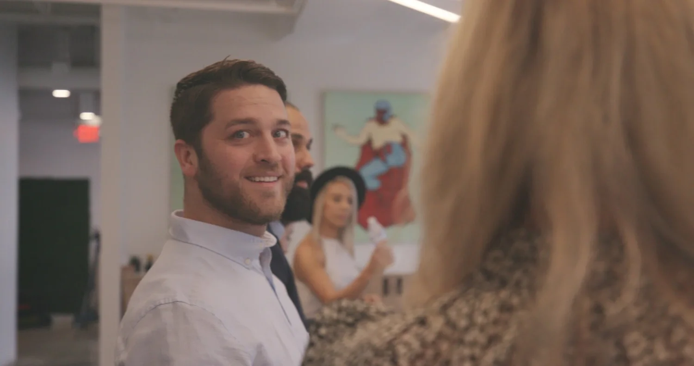

Everyone interviews well for an hour.
Here’s the hard truth about leadership hiring: interviews reward polish, and the job rewards substance. The candidate with the smoothest story about scaling teams isn’t always the one who can do it — and the difference never shows up in a panel. It shows up two quarters later, in slipped roadmaps and quiet resignations.
That’s what makes a leadership mis‑hire so expensive. It’s slow to see, awkward to name, and painful to unwind — and by the time everyone agrees there’s a problem, you’ve lost a year you don’t get back. With more track record to check and more references to call, you’d hope picking the right leader would be the easy part.
It isn’t.
The leaders you actually want aren’t applying to anything. They’re heads‑down running teams, and they take exactly one kind of call: from a person they trust. My job is to be that person — for them, and for you.
Leadership searches I run
From a team’s first engineering manager to the CTO seat, I’ve run searches for startups that had never hired a manager and for enterprises replacing one very quietly. Every search starts the same way: figuring out what this team, at this stage, actually needs from its leader.
- Engineering Managers | your team’s first, or their fifth
- Directors & VPs of Engineering | org builders and rebuilders
- CTOs | seed stage through scale
- Founding Engineers | the hire who sets the bar
- Confidential replacement searches | handled quietly, start to finish
If the search is sensitive, it stays that way. No job posts, no announcement, no rumor mill — just direct, discreet conversations with leaders who fit.


Meet Mike Bidak, the human behind the search
I came to recruiting through a Psychology degree, and it shows. I’ve recruited in‑house and at agencies, and both sides taught me the same lesson: leadership hires don’t fail on skills — they fail on fit, motivation, and trust. Those are human questions, and reading people honestly is the whole job.
One thing I’ll say plainly: I’m not an engineer. So I calibrate the technical bar with your best engineers — it’s yours, not mine. What I bring is the part no tool can: hundreds of real conversations with engineering leaders, and a good ear for the difference between a great interview and a great leader.
How it works
We talk about the seat you need filled — and, if there was one, the person who just left it. No pitch, no deck. If I’m not the right recruiter for this search, I’ll say so and point you to someone who is.
We define what great actually looks like for this role — with you, your senior engineers, and your founders or board if they’re in the loop. Then I go find it: quiet, direct outreach to leaders who aren’t on the market, because the best ones never are.
You get a short list of leaders I’d stake my name on — pre‑vetted, genuinely interested, and briefed honestly on your team. I handle scheduling, references, and the offer conversation until the ink is dry. And I check in long after it is.

Let’s get this seat right.
Fifteen minutes is enough to tell whether I can help. Tell me about the role through the form, or email me directly at Michael@Bidakgroup.com — either way, a human replies within the day.
Get Started